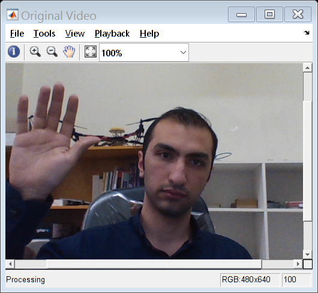
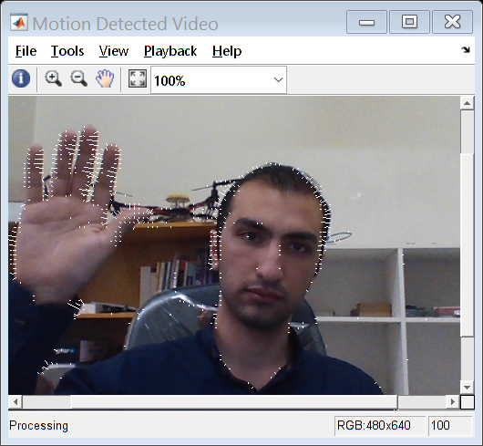
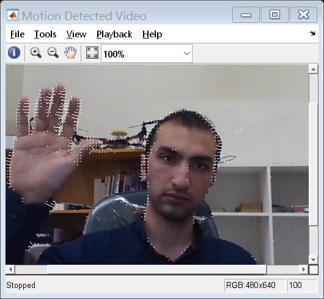

Live Motion Detection Using Optical Flow
This example shows how to create a video algorithm to detect motion using optical flow technique.This example uses the Image Acquisition Toolbox™ System Object along with Computer Vision System Toolbox™ System objects.
Contents
Introduction
This example streams images from an image acquisition device to detect motion in the live video. It uses the optical flow estimation technique to estimate the motion vectors in each frame of the live video sequence. Once the motion vectors are determined, we draw it over the moving objects in the video sequence.
Initialization
Create the Video Device System object.
cam = webcam(1) cam.Resolution = '640x480'; % get an image for its width and heigh im = snapshot(cam);
cam =
webcam with properties:
Name: 'Lenovo EasyCamera'
Resolution: '1280x720'
AvailableResolutions: {1×6 cell}
Brightness: 50
WhiteBalance: 4500
Sharpness: 50
Gamma: 50
Saturation: 50
Contrast: 50
WhiteBalanceMode: 'auto'
Hue: 50
Create a System object to estimate direction and speed of object motion from one video frame to another using optical flow.
optical = vision.OpticalFlow( ... 'OutputValue', 'Horizontal and vertical components in complex form');
Warning: The vision.OpticalFlow will be removed in a future release. Use the opticalFlowHS, opticalFlowLK, or opticalFlowLKDoG function with equivalent functionality instead.
Initialize the vector field lines.
maxWidth = size(im, 2); maxHeight = size(im, 1); shapes = vision.ShapeInserter; shapes.Shape = 'Lines'; shapes.BorderColor = 'white'; r = 1:5:maxHeight; c = 1:5:maxWidth; [Y, X] = meshgrid(c,r);
Create VideoPlayer System objects to display the videos.
hVideoIn = vision.VideoPlayer; hVideoIn.Name = 'Original Video'; hVideoOut = vision.VideoPlayer; hVideoOut.Name = 'Motion Detected Video';
Stream Acquisition and Processing Loop
Create a processing loop to perform motion detection in the input video. This loop uses the System objects you instantiated above.
% Set up for stream nFrames = 0; while (nFrames<100) % Process for the first 100 frames. % Acquire single frame from imaging device. rgbData = im2double(snapshot(cam)); % Compute the optical flow for that particular frame. tic; optFlow = step(optical,rgb2gray(rgbData)); toc totalFlow = mean(mean(optFlow, 1), 2) * 10000; fprintf('%4.2f, %4.2f\n', real(totalFlow), imag(totalFlow)); % Downsample optical flow field. optFlow_DS = optFlow(r, c); H = imag(optFlow_DS)*50; V = real(optFlow_DS)*50; % Draw lines on top of image lines = [Y(:)'; X(:)'; Y(:)'+V(:)'; X(:)'+H(:)']; rgb_Out = step(shapes, rgbData, lines'); % Send image data to video player % Display original video. step(hVideoIn, rgbData); % Display video along with motion vectors. step(hVideoOut, rgb_Out); % Increment frame count nFrames = nFrames + 1; end
Elapsed time is 0.055255 seconds. 5.63, 36.18 Elapsed time is 0.040464 seconds. -15.82, 6.78 Elapsed time is 0.041157 seconds. 7.65, 0.70 Elapsed time is 0.038740 seconds. -2.18, -3.22 Elapsed time is 0.039755 seconds. -3.21, 1.03 Elapsed time is 0.037692 seconds. -0.89, -2.17 Elapsed time is 0.037438 seconds. -1.70, 5.07 Elapsed time is 0.036900 seconds. -1.97, -4.70 Elapsed time is 0.036743 seconds. -1.61, 5.17 Elapsed time is 0.037649 seconds. -0.41, -2.88 Elapsed time is 0.037592 seconds. -1.37, 1.08 Elapsed time is 0.037698 seconds. -1.02, 1.78 Elapsed time is 0.037531 seconds. -3.04, 1.29 Elapsed time is 0.037763 seconds. -3.30, -0.77 Elapsed time is 0.037420 seconds. -2.30, -0.97 Elapsed time is 0.036707 seconds. -6.26, 5.53 Elapsed time is 0.036293 seconds. -7.93, -0.57 Elapsed time is 0.036526 seconds. -6.56, 1.14 Elapsed time is 0.036662 seconds. -9.82, 5.80 Elapsed time is 0.036590 seconds. -10.84, 0.18 Elapsed time is 0.036555 seconds. -11.96, 4.23 Elapsed time is 0.036930 seconds. -13.57, 2.15 Elapsed time is 0.037387 seconds. -11.78, 2.87 Elapsed time is 0.035806 seconds. -11.66, 4.12 Elapsed time is 0.036749 seconds. -13.00, 1.70 Elapsed time is 0.036284 seconds. -11.50, -0.16 Elapsed time is 0.037353 seconds. -2.00, 0.93 Elapsed time is 0.036101 seconds. 4.14, -3.08 Elapsed time is 0.035816 seconds. 7.56, -2.35 Elapsed time is 0.036526 seconds. 8.81, -3.17 Elapsed time is 0.036445 seconds. 9.78, -2.47 Elapsed time is 0.035681 seconds. 10.31, -3.52 Elapsed time is 0.036483 seconds. 11.19, -1.01 Elapsed time is 0.035921 seconds. 11.54, -3.86 Elapsed time is 0.035956 seconds. 11.22, 0.94 Elapsed time is 0.036465 seconds. 10.39, -4.00 Elapsed time is 0.036322 seconds. 10.02, -1.27 Elapsed time is 0.035746 seconds. 10.16, 2.17 Elapsed time is 0.039886 seconds. 10.23, -2.46 Elapsed time is 0.036404 seconds. 10.59, 3.12 Elapsed time is 0.036059 seconds. 11.22, 0.08 Elapsed time is 0.035788 seconds. 10.73, -0.84 Elapsed time is 0.037561 seconds. 11.60, 2.28 Elapsed time is 0.036329 seconds. 12.72, -2.60 Elapsed time is 0.036252 seconds. 13.73, 4.81 Elapsed time is 0.036598 seconds. 14.29, -3.29 Elapsed time is 0.037867 seconds. 13.34, 3.19 Elapsed time is 0.036928 seconds. 11.90, -0.52 Elapsed time is 0.035831 seconds. 8.72, -2.15 Elapsed time is 0.037236 seconds. 0.79, 7.41 Elapsed time is 0.037592 seconds. -2.62, -3.91 Elapsed time is 0.036030 seconds. -8.50, 1.50 Elapsed time is 0.036590 seconds. -8.35, -10.44 Elapsed time is 0.036627 seconds. -8.88, -0.30 Elapsed time is 0.037940 seconds. -8.22, -3.54 Elapsed time is 0.036339 seconds. -8.44, -10.06 Elapsed time is 0.035736 seconds. -9.84, 0.07 Elapsed time is 0.037103 seconds. -13.82, -5.92 Elapsed time is 0.037186 seconds. -16.60, -8.04 Elapsed time is 0.036310 seconds. -16.11, 1.71 Elapsed time is 0.036160 seconds. -16.88, -10.95 Elapsed time is 0.036062 seconds. -18.21, 2.60 Elapsed time is 0.036822 seconds. -19.15, -5.73 Elapsed time is 0.036399 seconds. -19.17, -1.72 Elapsed time is 0.038545 seconds. -7.82, 3.51 Elapsed time is 0.037783 seconds. -0.31, -3.53 Elapsed time is 0.038427 seconds. 1.80, 9.17 Elapsed time is 0.037361 seconds. 2.07, -1.90 Elapsed time is 0.036625 seconds. 2.32, 7.88 Elapsed time is 0.039762 seconds. 5.21, 1.20 Elapsed time is 0.037353 seconds. 7.44, 2.42 Elapsed time is 0.036126 seconds. 11.65, 3.00 Elapsed time is 0.036882 seconds. 15.20, -2.31 Elapsed time is 0.036122 seconds. 17.54, 6.25 Elapsed time is 0.037011 seconds. 18.86, -2.55 Elapsed time is 0.035964 seconds. 19.93, 6.40 Elapsed time is 0.036144 seconds. 18.78, 2.09 Elapsed time is 0.036235 seconds. 11.28, 0.67 Elapsed time is 0.038499 seconds. 2.71, 3.82 Elapsed time is 0.036255 seconds. -2.22, -0.47 Elapsed time is 0.036225 seconds. -12.25, 2.71 Elapsed time is 0.036650 seconds. -11.80, -4.54 Elapsed time is 0.036930 seconds. -5.83, -3.04 Elapsed time is 0.036377 seconds. -8.92, 4.12 Elapsed time is 0.036987 seconds. -7.75, -6.12 Elapsed time is 0.037171 seconds. -2.61, 1.27 Elapsed time is 0.038050 seconds. 0.14, 0.08 Elapsed time is 0.036751 seconds. -0.26, -4.34 Elapsed time is 0.036900 seconds. 1.82, 4.16 Elapsed time is 0.036074 seconds. -0.08, -6.14 Elapsed time is 0.037536 seconds. -0.74, 1.52 Elapsed time is 0.036854 seconds. -1.95, -1.10 Elapsed time is 0.036115 seconds. -6.70, -4.90 Elapsed time is 0.038457 seconds. -11.03, 0.14 Elapsed time is 0.038601 seconds. -11.11, -10.43 Elapsed time is 0.036191 seconds. -10.82, 0.07 Elapsed time is 0.036149 seconds. -12.63, -7.88 Elapsed time is 0.037247 seconds. -14.92, -3.56 Elapsed time is 0.037649 seconds. -15.82, -1.50 Elapsed time is 0.036408 seconds. -17.68, -5.01 
Summary
In the Motion Detected Video window, you can see that the example detected the motion of the notebook. The moving objects are represented using the vector field lines as seen in the video player.
Release
Here you call the release method on the System objects to close any open files and devices.
clear cam;
release(hVideoIn);
release(hVideoOut);
